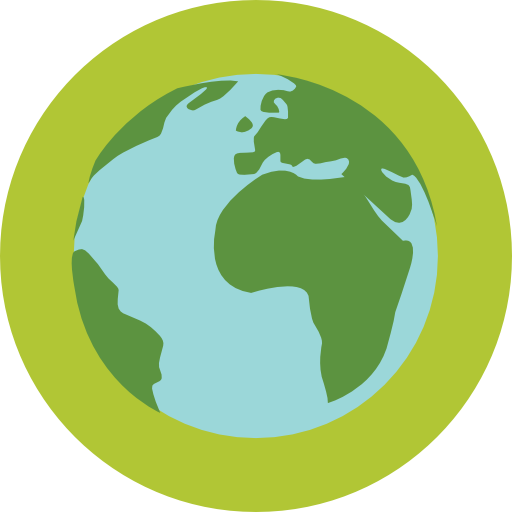

TORNE-SE PARCEIRO(A) DO PROJETO BURITI!
Se sua empresa tem políticas e ideais similares aos nossos, contate-nos para futuras parcerias. Será um prazer ajudá-lo!
Propostas Sustentáveis, Palestras e Ecoprodutos
O Projeto Buriti nasceu a partir da união de ideias voltadas para a conscientização ambiental, melhor qualidade de vida e respeito ao meio ambiente. Trabalhamos em parceria com empresas, instituições, comunidades, indivíduos e organizações sem fins lucrativos, buscando minimizar os impactos ambientais gerados em pequena, média e grande escala.
Nosso trabalho é de formiguinhas, juntos, conscientizamos hoje, para colher os frutos amanhã. É necessário cuidarmos dos recursos naturais, colaborarmos para o desenvolvimento sustentável, e educarmos nossas crianças para a valorização e conscientização ecológica, pensando nisso, nós, do Projeto Buriti queremos fazer brotar a sua colaboração e atitude verde. Conte conosco!
Tim is an experienced marcoms practitioner and manages projects from inception to delivery. He understands the synergy between great design and commercial effectiveness which shines through on every project.
Be a creative director is a hard task, but Michele loves what she does. Her combination of knowledge and expertise is an important pillar in our agency.
O Projeto Buriti desenvolve programas de educação ambiental, gestão de recursos naturais, resíduos sólidos, e propostas sustentáveis.
Trabalhar e desenvolver a educação ambiental e gestão ambiental em uma empresa, instituição ou comunidade é essencial para a postura consciente e bem estar da população envolvida. Além disso, gera benefícios econômicos observados em diversos âmbitos.
A Educação Ambiental, tem como objetivos resgatar os valores sobre a relação do homem com o meio ambiente, desenvolver a consciência coletiva, o estímulo à criação de hábitos de vida e, no caso das empresas, criação de sistemas produtivos sustentáveis. Pensando nisso, trabalhar em torno de um Programa de Educação Ambiental específico pode gerar muitas vantagens e benefícios.
Dentro da temática, elaboramos Planos de Economia de Água e Energia, Utilização Consciente de Papéis e Plásticos, Desperdício Zero de alimentos, Separação de Resíduos Orgânicos e Inorgânicos e Tratamento de Efluentes para condomínios, empresas, institutos e comunidades.
A gestão de recursos naturais tem como finalidade avaliar e aplicar o uso consciente de fontes de energia dentro de um plano de desenvolvimento econômico e social, disponibilizando metodologias e ações para conscientizar pessoas e empresas sobre a exploração excessiva da natureza e seus recursos.
Realizamos estudos dos impactos causados por novos empreendimentos ou projetos de ampliação, buscando aliar o desenvolvimento e o progresso, com a preservação da natureza.
Queremos tornar seu empreendimento sustentável. Atualmente, as entidades que investem e reconhecem a importância da sustentabilidade e da preservação estão conquistando cada vez mais espaço no mercado. Ter em sua marca a conscientização e responsabilidade ambiental traz excelentes resultados em vendas, participação no mercado e investimentos externos.
A Gestão de Resíduos Sólidos é um conjunto de ações baseadas em critérios ambientais, sanitários e econômicos para classificar, separar, transportar e tratar ou dispor adequadamente todos os resíduos de um local ou área, levando em consideração a legislação pertinente.
Para realizar a Gestão e o Gerenciamento de Resíduos Sólidos, são utilizados procedimentos e técnicas que objetivam garantir a adequada coleta, manuseio, armazenamento e transporte dos resíduos, com riscos mínimos para os seres humanos e para o meio ambiente.
A elaboração de um programa de destinação seletiva dos resíduos, buscando treinar os funcionários e a comunidade para garantir a efetiva segregação e reciclagem dos materiais é um dos focos do plano de gerenciamento.

A Política Nacional de Resíduos Sólidos, na Lei 12.305/2010, propõe a elaboração de Planos de Resíduos Sólidos, que deve ser feita pelo setor público a nível federal, estadual e municipal e por empresas públicas ou privadas.
Os Planos de Gerenciamento de Resíduos Sólidos – PGRS são documentos que comprovam a capacidade de uma empresa de gerir todos os resíduos que eventualmente venha a gerar. A intenção de ter um documento como esse é ter segurança de que os processos produtivos em uma determinada cidade ou país, sejam controlados para evitar grandes poluições ambientais e as devidas consequências para a saúde pública e desequilíbrio da fauna e da flora.
O Projeto Buriti trabalha com Gestão e Gerenciamento de Resíduos Sólidos, elabora PGRS, e disponibiliza alternativas e projetos para a sua empresa!
Visando a conscientização e informação, o Projeto Buriti possui palestras e oficinas dinâmicas e interativas, ligadas às temáticas ambientais, destinadas a pequenos, médios e grandes grupos de pessoas de todas as idades.
O Projeto Buriti tem, à disposição, diversas palestras e oficinas teóricas e práticas, voltadas aos temas Meio Ambiente e Saúde:
- Economia de Energia - importância da conscientização.texto
Os Ecoprodutos, ou Produtos ecológicos são materiais benéficos ao meio ambiente e à saúde, que auxiliam no desenvolvimento de um modelo econômico e social sustentável.
São elaborados a partir do uso de matérias-primas renováveis ou não-renováveis, com produtos reaproveitados, reciclados, que impactem o mínimo possível o meio ambiente.
Projeto Buriti conta com Ecoprodutos confeccionados à partir de materiais reutilizados:


Se sua empresa tem políticas e ideais similares aos nossos, contate-nos para futuras parcerias. Será um prazer ajudá-lo!
Volte Sempre
Bauru, São Paulo
(14) 98123 1857
thalia.ambiental@gmail.com
@thaliambiental
Thalia Ambiental
Estamos localizados na cidade de Bauru-SP, e atendemos toda a região do centro-oeste paulista. Para contratar nossos serviços, tirar dúvidas, deixar comentários e sugestões, entre em contato com a equipe Projeto Buriti: